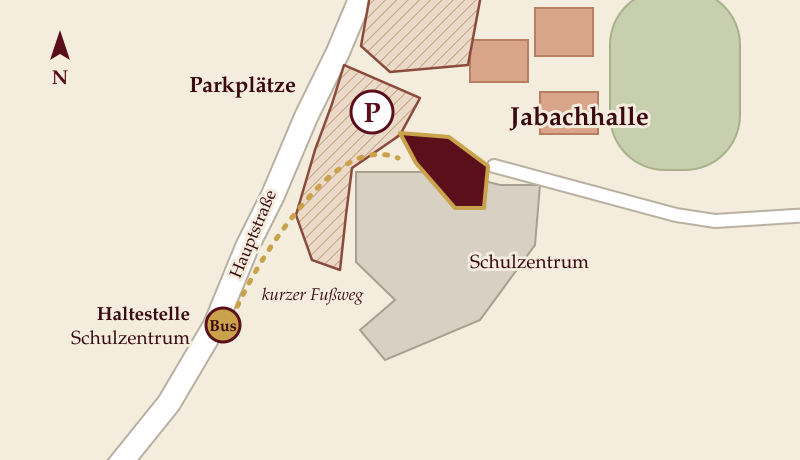

Reisebegleiter · Reisekasse
KSK Lohmar
Vorverkaufsstelle für Ihre Tickets und gut gefüllte Reisekasse.
Zur WebsiteLohmarer Kinotag
Live kommentiert von Silke Schranz und Christian Wüstenberg
Samstag, 18. September 2027, 18 Uhr
Jabachhalle Lohmar · Einlass ab 17 Uhr · freie Platzwahl
Zehntausend Kilometer von Kapstadt bis Johannesburg: Silke Schranz und Christian Wüstenberg haben Südafrika im Camper durchquert und dabei mehr als 50 Stationen angesteuert. Die Reise führt vom Tafelberg über die Garden Route und durch viele Nationalparks bis in den Krüger-Nationalpark, mit Abstechern nach Lesotho und Swasiland.
Zu sehen sind weite Landschaften, Tiere in großer Nähe und Begegnungen mit Menschen vor Ort. Dazu gibt es viele Reisetipps. Der Film ist als Kinoerlebnis gedacht: Die Landschaften wirken erst auf der großen Leinwand.


Silke Schranz und Christian Wüstenberg produzieren ihre Reisefilme unabhängig und stellen sie persönlich im Kino vor. Nach eigener Auskunft liefen ihre Filme bereits in über 800 Kinos in Deutschland. Laut ihrer Vorstellung stehen sie vor und nach der Vorführung im Foyer für Fragen bereit.
In Lohmar gibt es bislang kein Kino. Mit dem Lohmarer Kinotag kommt der Film in die Jabachhalle.
12 Euro
Der Vorverkauf startet in Kürze. Hier erscheint dann der Link zum Online-Ticketkauf. Die Vorverkaufsstellen in Lohmar stehen ebenfalls hier. Die KSK Lohmar unterstützt den Vorverkauf.
Jabachhalle Lohmar
Donrather Dreieck 1
53797 Lohmar
Hier erscheint die Karte von Google Maps. Beim Laden werden Daten an Google übertragen (siehe Datenschutz).

Keine große Reise ohne gute Begleitung: Diese Unternehmen aus der Region machen den Lohmarer Kinotag möglich. Jeder von ihnen steht für eine Station auf dem Weg dorthin.
Vorverkaufsstelle für Ihre Tickets und gut gefüllte Reisekasse.
Zur WebsiteFür das Ankommen nach der Reise: ein Zuhause, in dem man gern wieder die Koffer auspackt.
Zur WebsiteWerden Sie Reisebegleiter des Lohmarer Kinotags.
Jetzt anfragenNein, die Platzwahl ist frei.
Der Einlass beginnt um 17 Uhr, der Film startet um 18 Uhr.
Die Dauer geben wir bekannt, sobald sie feststeht.
Die Regelung geben wir mit dem Vorverkaufsstart bekannt.
Ein „Kinderkino mit Frühstück“ am Vormittag ist in Planung. Sobald es feststeht, informieren wir hier.
Veranstalter sind Uli & Hansel Fingerhuth.